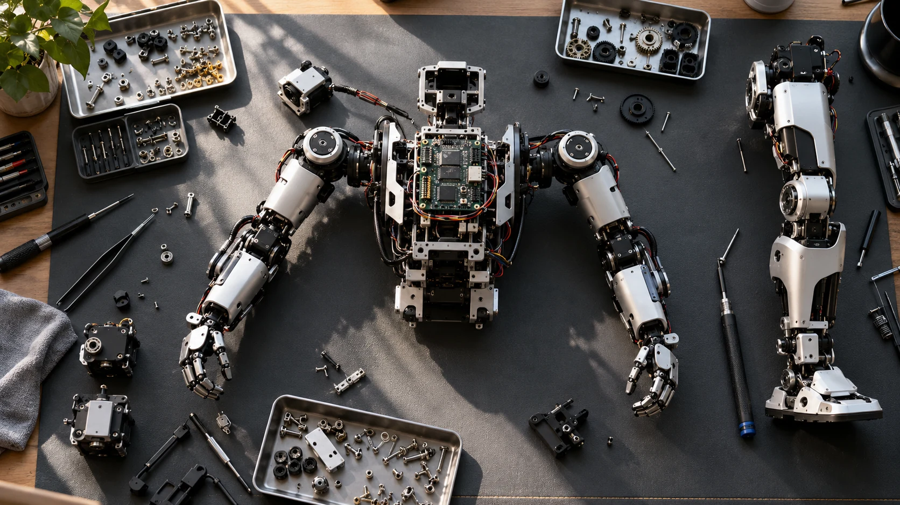

Choose how much of the hardware problem you want to own before choosing the hardware itself.
A robot kit and an assembled research platform can both be excellent starting points. They simply place the learning effort in different places. A kit may make the mechanism and assembly process central to the project. A platform may help a team reach its software or interaction experiments sooner.
Define the learning objective
If the goal is to understand assembly, actuator configuration, or mechanical design, the build process is part of the value. If the goal is to study perception or a manipulation policy, assembly may be a dependency rather than the main activity. Make that distinction explicit before comparing products.
Count the resources you already have
Look at tools, workspace, supervision, programming experience, and available time. A well-documented kit can still demand careful setup and troubleshooting. An assembled platform can still require substantial software integration. Neither route removes the need to understand the manufacturer’s operating instructions.
Inspect the documentation before buying
Open the installation guide, sample projects, and recovery instructions. Check that they match the current hardware version. Ask whether the development environment is maintained and whether replacement parts can be obtained in your region. Documentation quality is something you can begin evaluating before the robot arrives.

Plan a small first result
Choose one modest milestone that proves the entire setup works. For a kit, that might mean a documented assembly and calibration sequence. For a research platform, it might mean a supported example with recorded outputs. A narrow first result creates a useful baseline for later changes.
Write two milestone plans before deciding
Create one plan for a kit and another for an assembled platform. Both should end at the same useful result, such as recording a repeatable supported motion or running a small perception experiment. For the kit, include inventory, assembly, configuration, calibration, and troubleshooting. For the platform, include receiving checks, environment installation, interface familiarization, and reproduction of a documented example. Ask the intended team to estimate the effort and identify unfamiliar steps. The comparison becomes more honest when neither option begins with an imaginary assumption that everything works immediately. It also reveals which route teaches the skills the team actually wants to acquire.
Choose a kit whose build is part of the lesson
A kit is particularly useful when the participants need to understand how mechanical decisions, wiring, configuration, and software interact. Give those activities explicit learning outcomes rather than treating assembly as a race to reach movement. For example, the team could document each subassembly, explain the purpose of each connection, and record the configuration before testing. Choose an appropriately scoped first build and follow the supplied instructions. If the real objective is an unrelated experiment with a fixed deadline, be cautious about making an unfamiliar build its critical dependency. The value of hands-on work depends on having enough time and support to learn from it.
Keep the first successful setup reproducible
Once the documented example works, capture the environment before making ambitious changes. Save the setup steps, relevant software versions, configuration files, and a short description of the observed result. Include the exact hardware variant and any accessories required. Another team member should be able to follow the record without relying on the original builder's memory. This is useful for an assembled platform as well as a kit: both can drift into a state that works only on one person's computer. A reproducible baseline gives later experiments a dependable point of comparison and makes support questions easier to explain.
Think about the second builder and the second semester
A purchase often outlives the first person who configures it. Before choosing, consider who will maintain the assembly record, preserve small parts, and introduce the next user. Check how replacement components are identified and how the supplier documents changes between versions. For a shared lab, decide which modifications are allowed and how they are recorded. For a teaching project, prepare a way to return the equipment to a known starting condition. These practical decisions influence whether the hardware remains useful after the first demonstration. The best choice is the one whose ownership requirements fit the team over time, not only during an enthusiastic opening week.
Your next step.
- Write the learning goal in one sentence.
- Inspect the actual setup instructions.
- Choose a first milestone that fits the team’s resources.
Sources & further reading
Primary sources and manufacturer documentation for the examples and further investigation. Recommendations in this article are HUMANOID’s editorial guidance.
ROBOTIS: BIOLOID series ↗Pollen Robotics: Reachy 2 documentation ↗Originally prepared and references reviewed: 24 October 2026. Expanded with practical guidance and original illustrations: 25 October 2026. Editorial archive date: 14 Sept 2026. This is original editorial content, not a record of a historical product launch, independent test, or purchase.